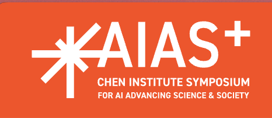
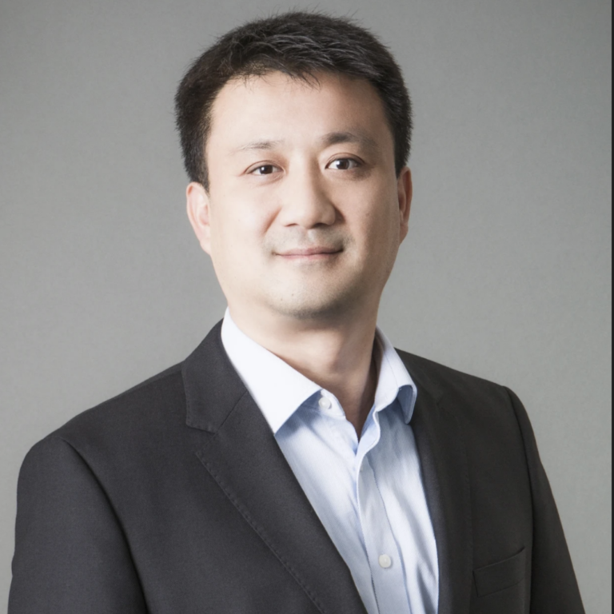
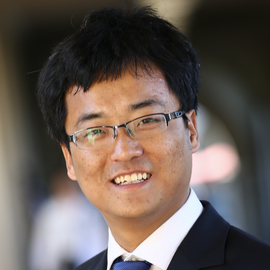
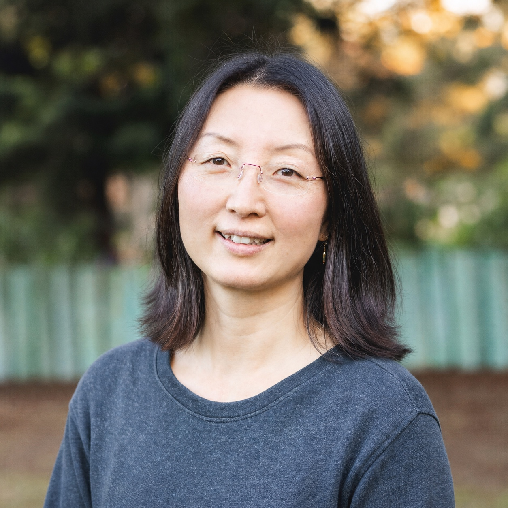

Neural & behavioral data
AI methods for modeling and interpreting complex, high-dimensional neural and behavioral recordings.


Toward AI systems that form hypotheses, design experiments, and refine their own understanding of neural systems.
AI and neuroscience have long evolved in tandem — early AI drew inspiration from the brain, and modern AI has now reached a capability that can fundamentally reshape how neuroscience is done.
This workshop explores a phase in which AI moves beyond data analysis and modeling to become an active participant in scientific discovery. We take inspiration from the history of neuroscience — how transformative ideas about the brain were conceived, tested, and refined — and build toward a more ambitious question:
Can AI systems learn to generate and pursue scientific insight at superhuman scale?
We envision discoverative AI systems that do not merely process data, but continuously formulate hypotheses, design experiments, generate data, and iteratively refine their understanding of neural systems — shifting from stochastic, human-expert-limited hypothesis generation to expansive, automated exploration of the brain's complexity.
Where NeuroAI efforts (e.g. at CSHL and NIH) build next-generation AI inspired by the brain, this workshop emphasizes the reverse direction: leveraging modern AI to advance neuroscience itself — systems that generate hypotheses, design experiments, and participate in iterative scientific discovery.
The workshop explores methods and questions that move neuroscience from prediction and pattern-recognition toward mechanistic understanding.
AI methods for modeling and interpreting complex, high-dimensional neural and behavioral recordings.
Scientific reasoning and automated hypothesis generation about how neural systems work.
AI-driven experimental design, active learning, and closed-loop neuroscience.
Causal inference and mechanistic models that move past correlation toward how the brain computes.
Multimodal and foundation models trained across diverse brain and behavior datasets.
Brain-inspired and memory-centric AI architectures.
Agents that plan, reason, and act within iterative discovery workflows.
Datasets, simulation environments, and evaluation frameworks for discoverative systems.
Our invited experts bring perspectives spanning neuroscience, artificial intelligence, research strategy, and scientific innovation.
30-minute talk + 5-minute Q&A
Audience questions and direct discussion

Associate Professor of Neurological Surgery and Biomedical Engineering at USC and director of the Neural Modeling and Interface Laboratory. His research includes neural modeling, memory prostheses, and neural interface technologies.

Shaul Druckmann is an associate professor of neurobiology and psychiatry and behavioral sciences at Stanford University. His laboratory combines neural-population recordings, mathematical theory, and circuit analysis to understand how brain networks represent information and perform computations. His research on distributed and resilient memory systems offers biological principles for developing more robust and interpretable AI.
Joseph Monaco is a scientific program manager in the Office of the BRAIN Director at NIH/NINDS. His work spans NeuroAI, open neuroscience data systems, and the responsible use of AI, building on earlier computational research into hippocampal dynamics and spatial cognition. He brings a national perspective on the data infrastructure, research priorities, and ethical questions shaping AI-enabled neuroscience.
Wei Wang is the Leonard Kleinrock Chair Professor of Computer Science and Computational Medicine at UCLA and director of the Scalable Analytics Institute. Her research develops machine-learning and data-mining methods for large, complex biomedical datasets, including work in causal discovery and computer-assisted experiment planning. Her work demonstrates how AI can move beyond recognizing patterns to help scientists generate hypotheses and design more informative experiments.

Charles “Chuck” Ng is an entrepreneur and technology investor who co-founded Eureka Therapeutics and has invested in or advised companies including Databricks, Ironclad, Mammoth Biosciences, Meta, and Alibaba. As co-founder of the Foundation for Science & AI Research, he focuses on building collaborations among leading scientists, AI researchers, institutions, and industry. He brings a practical perspective on how AI-driven scientific ideas can attract support, cross institutional boundaries, and become real-world innovations.

Professor of Neurosurgery and of Psychiatry and Behavioral Sciences at Stanford. Her research examines the cellular and molecular mechanisms of synapse function and synaptic plasticity.
Moderated by Dongjin Song and Dong Song, this audience-facing conversation invites attendees to ask questions, interact directly with panelists, and explore open challenges, future directions, and opportunities for collaboration.
Invited presentations, audience Q&A, and a closing panel bringing together AI and neuroscience communities.
Join for an in-person discussion of discoverative AI for understanding the brain.

Associate Professor of Neurological Surgery and Biomedical Engineering at USC, working at the intersection of neuroscience, AI, and brain–machine interfaces. His research models neural dynamics underlying memory and develops closed-loop neural interface technologies for decoding and modulating brain activity in naturalistic settings, supported by initiatives such as DARPA and the NIH BRAIN Initiative.

Associate Professor in the School of Computing at UConn; previously a research staff member at NEC Labs America. PhD from UCSD (2016). His research spans machine learning, data science, and deep learning for time-series analysis. Recipient of the NSF CAREER Award (2024) and the Frontiers of Science Award in Computer Science (2024), and co-organizer of the AI4TS and MiLeTS workshop series.

Professor of Neuroscience in the Department of Neurosurgery at Stanford School of Medicine. An experimental neuroscientist studying molecular players in long-term synaptic plasticity and how synapse function underlies learning, perception, and neurological disorders. Her work has been recognized by the Beckman Young Investigator Award, the Packard Fellowship, the W.M. Keck Distinguished Young Scholars Award, and a MacArthur Fellowship.
Domain experts supporting the workshop across machine learning, data mining, and neural engineering.
All participants register through the official AIAS+ 2026 portal.
Workshop registration is handled entirely through the AIAS+ 2026 Symposium — there is no separate registration system for this workshop.